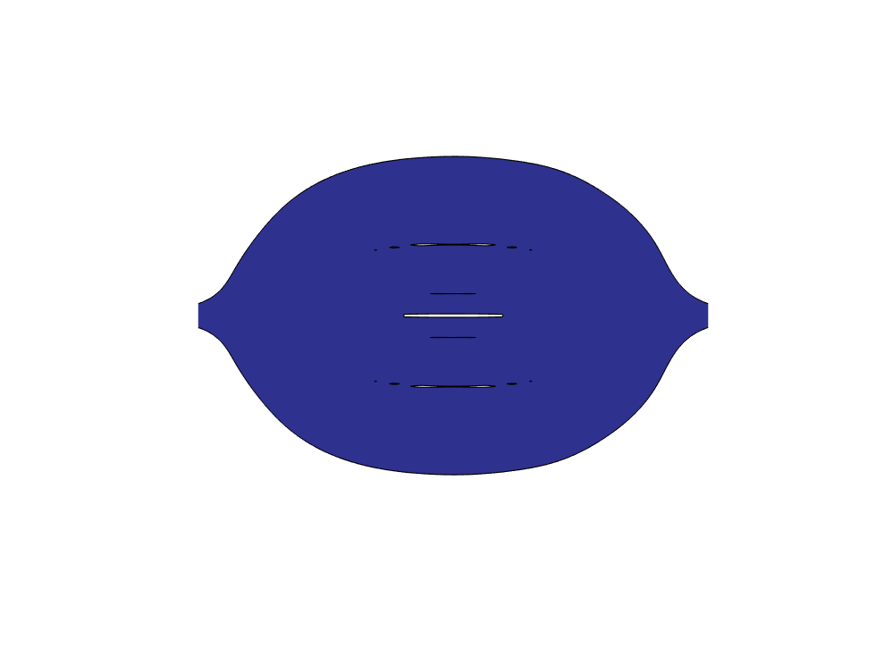
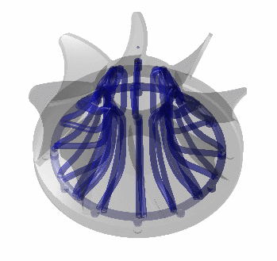
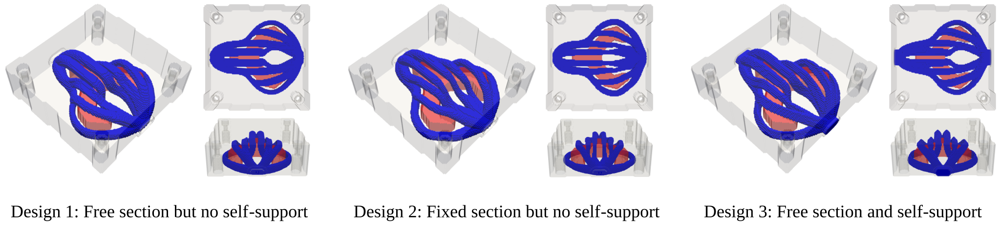
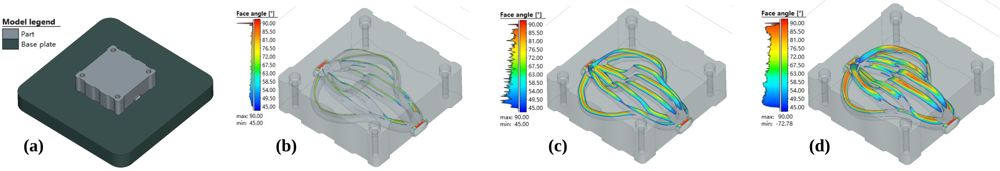

Two-Dimensional Example
2D heat transfer design, considering the K-eps turbulent flow model.
A differentiable and CAD-compatible framework for geometry-controlled structural and fluid topology optimization.
Topology optimization has been widely applied to thermal–fluid design, particularly for channel-based systems. However, many conventional approaches rely on implicit density-field representations, making it difficult to preserve geometrically interpretable channel features and directly obtain editable CAD models. This study develops a geometry-driven topology optimization framework for cooling-system design based on a three-dimensional loft-based channel representation. Each channel is parameterized by a B-spline centerline and spatially varying cross-sectional profiles, enabling simultaneous control of its trajectory and sectional shape. The resulting geometry is mapped onto a fixed background mesh through a distance-field-based explicit–implicit formulation for thermal–fluid analysis. A predominantly analytical sensitivity scheme is developed for the geometry-to-field mapping, with finite-difference evaluation restricted to the computationally inexpensive rotation-minimizing-frame term. The local nature of the mapping is further exploited through narrow-band evaluation to improve computational efficiency. Curvature, domain-feasibility, adhesion, and self-support constraints are incorporated to preserve design intent and additive manufacturability. Numerical examples demonstrate that the method can generate complex two- and three-dimensional channels while retaining explicit geometric control, computationally efficient gradient evaluation, and direct reconstruction of editable CAD geometries.
The optimization pipeline consists of B-spline geometric parameterization, signed-distance evaluation, geometry-to-grid mapping, multiphysics analysis, analytical sensitivity analysis, gradient-based optimization, and direct CAD reconstruction.
The two-dimensional explicit geometry is constructed from a B-spline guideline and its associated control points, as illustrated in Fig.1 (a). A radius field is defined along the same local coordinate system as the guideline, as shown in Fig.1 (b), and is subsequently used to generate the explicit geometric representation in Fig.1 (c). The shortest-distance field between the background mesh points and the explicit geometry is then evaluated, as presented in Fig.1 (d). Finally, this distance field is transformed into the corresponding implicit geometric representation shown in Fig.1 (e).
Fig.2 (a) presents an overview of the two-dimensional formulation. This formulation is directly extended to three dimensions in Fig.2 (b), where the cross-sectional geometry is restricted to circular profiles with spatially varying radii. To improve the geometric flexibility, a two-dimensional tensor-product B-spline radius field is further introduced in Fig.2 (c), enabling the representation of more expressive and freely varying cross-sectional shapes. Fig.2 (d) illustrates the three-dimensional B-spline guideline together with its associated cross-sectional control shapes, from which the explicit three-dimensional geometry shown in Fig.2 (e) is constructed. The corresponding implicit representation is then obtained from the shortest-distance field, as presented in Fig.2 (f). Finally, Fig.2 (g) shows the CAD reconstruction generated directly from the geometric control variables defined in Fig.2 (d).
Fig.3 (a) illustrates the ambiguity that arises when two B-spline guidelines become nearly coincident, motivating the introduction of a geometric constraint that encourages them to form a unified backbone. Candidate guideline pairs are identified according to both their spatial distance and tangential alignment, as shown in Fig.3 (b). A differentiable gating function is then used to activate only those pairs that are sufficiently close and consistently aligned, as illustrated in Fig.3 (c). Finally, the contributions of all activated pairs are aggregated into a global constraint energy, which is incorporated into the gradient-based optimization process, as shown in Fig.3 (d).
In addition, conventional geometric constraints, including the curvature constraint, feasible-domain constraint, and self-support constraint, are also incorporated into the optimization framework. Since these constraints follow established formulations and are not the primary focus of this work, their detailed formulations are not repeated here.

2D heat transfer design, considering the K-eps turbulent flow model.

3D cooling channel for molding structure.

3D conformal cooling channel for complex geometry.

CAD Reconstruction for the results obtained from our work.

The optimized results with different weighting ratio w: (a) the final optimized material distribution and convergence history; and (b) the pareto plot for the structural performance.

The optimized results for molding structure considering the self-support constraint (g_5). The geometric configurations and corresponding response field distributions are presented in (a). The convergence histories are shown in (b), while the geometry evolution processes are illustrated in (c).

Illustration of the CAD reconstruction detail results. (a) Construction of the channel feature using loft and Boolean operations, where a DSL representation is directly generated from the optimized design variables; (b) generation of the full-scale molding part via Boolean subtraction between the design domain and the channel feature; (c) final reconstructed CAD model; (d) detailed view of the channel feature.

In the ablation studies, we implemented the three designs shown in the figure above, based on their respective degrees of freedom and constraints.

High-fidelity analysis results for Designs 1–3. The conformal meshes, fluid velocity fields, and temperature distributions are presented.
Based on the reconstructed CAD models, high-fidelity simulations are performed for Designs 1–3 by solving the NS equations, while maintaining consistent material properties and boundary conditions. Specifically, the exported STEP models are converted into conformal body-fitted tetrahedral meshes, on which the Navier–Stokes-based flow and heat transfer simulations are conducted. All other numerical settings are kept consistent with those adopted in the low-fidelity Darcy-flow simulations based on voxelized meshes. Overall, good agreement between the optimized predictions and high-fidelity simulations is observed in terms of temperature distribution, thereby validating the effectiveness and reliability of the proposed framework. Then the detail data comparison is shown in below Table.
| Case name | Low-fidelity analysis | High-fidelity analysis | ||
|---|---|---|---|---|
| (Darcy and voxel mesh) | (NS and conformal tetrahedral mesh) | |||
| Element number | Maximum temperature | Mesh number | Maximum temperature | |
| Design 1 | 576,000 | 924.43 K | 2,134,566 | 948.52 K |
| Design 2 | 576,000 | 989.24 K | 1,875,369 | 972.44 K |
| Design 3 | 576,000 | 932.13 K | 2,345,369 | 954.39 K |
Below figure presents the self-supportability analysis of the optimized designs, where the color map denotes the angle between facet normal vectors and the building direction. Following commonly adopted additive manufacturing criteria, facets with angles below 45° are considered self-supporting, whereas larger angles indicate increased overhang risk.

@article{xu2026geometry,
title = {Geometry-Driven Topology Optimization
with B-Spline Geometric Features},
author = {Xu, Shuzhi and Others},
journal = {Journal Name},
year = {2026}
}
This work was supported by The University of Osaka, Shandong University, and the Japan Society for the Promotion of Science.
We also gratefully acknowledge Dr. Yifan Guo for his insightful discussions on code implementation and constraint construction.